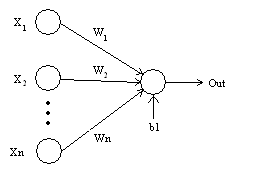

Персептрон – это нейронная сеть, которая представляет собой алгоритм для выполнения двоичной классификации. Он определяет, относится ли объект к определенной категории (например, является ли животное на рисунке кошкой или нет).
Как работает персептрон
Персептроны часто применяются для решения контролируемых задач обучения: они тренируются по набору пар входных/выходных объектов и учатся моделировать корреляции ( т. е. зависимости) между этими данными. Обучение включает в себя настройку параметров модели (весовых коэффициентов, смещений) для минимизации погрешности. Для корректировки этих параметров относительно погрешности используется алгоритм обратного распространения, а сама погрешность может быть вычислена различными способами, в том числе путем вычисления среднеквадратичного отклонения (RMSE).
Сети прямого распространения, такие как многослойный персептрон, похожи на теннис или пинг-понг. Они в основном состоят из двух видов движений: вперед и назад. Получается своеобразная игра в пинг-понг между догадками и ответами, поскольку каждая догадка – это проверка того, что мы знаем, а каждый ответ – это обратная связь, позволяющая нам узнать, насколько сильно мы ошибаемся.
При шаге вперед поток сигнала перемещается от входного слоя через скрытые к выходному, а решение, полученное на выходном слое, сравнивается с априорно известным верным ответом.
При шаге назад с использованием правила дифференцирования сложных функций через персептрон в обратном направлении распространяются частные производные функции, погрешности по весовым коэффициентам и смещениям. Данный акт дифференцирования дает нам градиент погрешности, с использованием которого могут быть скорректированы параметры модели, так как они приближают МП на один шаг ближе к минимуму погрешности. Это можно сделать с помощью любого алгоритма градиентной оптимизации, например, методом стохастического градиентного спуска. Сеть продолжает играть в пинг-понг, пока погрешность не исчезнет. В этом случае, как говорят, наступает сходимость.